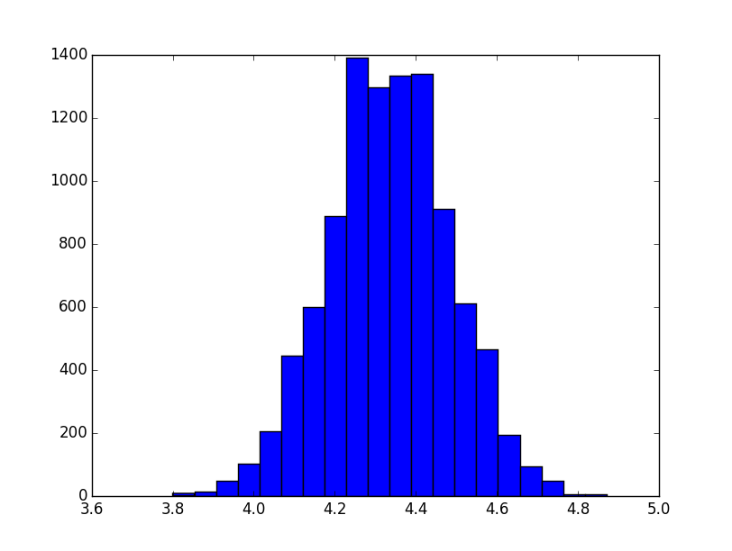
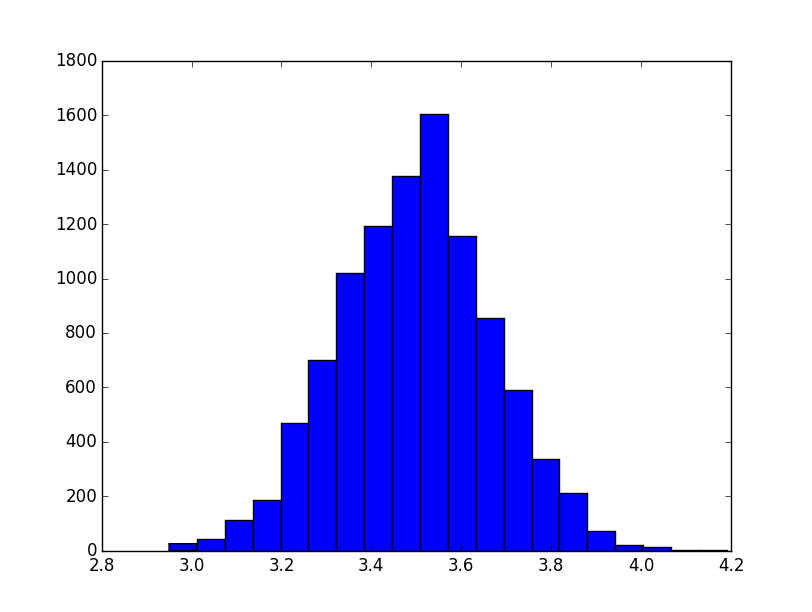
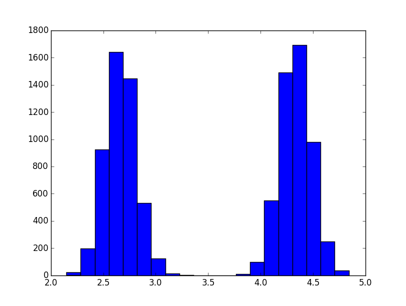

CV9: Pravděpodobnost
A) Monty Hall
Pravděpodobnosti výhry při 1 000, 10 000 a 100 000 pokusech:
- Beze změny rozhodnutí: 0.333 0.3302 0.33469
- Změna rozhodnutí: 0.682 0.6769 0.66741
- Náhodně změnit/nezměnit rozhodnutí: 0.491 0.4993 0.50001
B) Nenáhodná čísla
1. soubor dat
- Frekvence čísel: '1': 833, '3': 833, '6': 833, '2': 834, '5': 833, '4': 834
- Chí kvadrát: 0.001599
- Opakování n-tic: N/A
Vzorek vypadá „až příliš dobrý“ na to, aby byl náhodný. Po zběžné prohlídce mi přišlo, že by mohl být vytvořen jako posloupnost náhodných permutací množiny "1 2 3 4 5 6". To se potvrdilo -- tato posloupnost se v různých permutacích opakuje celkem 833 krát. Tedy až na poslední dvojici (2 a 4) celý soubor.
2. soubor dat
- Frekvence čísel: '1': 856, '3': 829, '6': 798, '2': 428, '5': 1244, '4': 845
- Chí kvadrát: 401.8312
- Opakování n-tic: N/A
Zjevně vyšší pravděpodobnost pětky oproti dvojce.
3. soubor dat
- Frekvence čísel: '5': 821, '3': 850, '6': 850, '2': 836, '1': 819, '4': 824
- Chí kvadrát: 1.2088
- Opakování n-tic: N/A
Zdá se v pořádku.
4. soubor dat
- Frekvence čísel: '5': 819, '3': 829, '6': 823, '2': 827, '1': 852, '4': 850
- Chí kvadrát: 1.1968
- Opakování n-tic: N/A
Zdá se v pořádku.
5. soubor dat
- Frekvence čísel: '5': 842, '3': 812, '6': 859, '2': 836, '1': 808, '4': 843
- Chí kvadrát: 2.317599
- Opakování n-tic: 514 krát '53416'
Opakování posloupnosti '53416'.
6. soubor dat
- Frekvence čísel: '1': 849, '3': 849, '6': 802, '2': 851, '5': 803, '4': 846
- Chí kvadrát: 3.438399
- Opakování n-tic: 47 krát '263351312255621626365641541521666445336432123351613652'
Opakování posloupnosti '263351312255621626365641541521666445336432123351613652'.
7. soubor dat
- Frekvence čísel: '5': 833, '3': 823, '6': 830, '2': 842, '1': 838, '4': 834
- Chí kvadrát: 0.2584
- Opakování n-tic: 2 krát '314153231326125151465252643645653635522646445125334612161...' (délka 1250)
Opakování posloupnosti.
C) Centrální limitní věta

Hody kostkou Ka. Průměr: 4.334608. Odchylka: 0.149432
{kind=link}
Hody kostkou Ka. Průměr: 4.334608. Odchylka: 0.149432

Náhodně výběr Ka/Kb pro vzorek. Průměr: 3.515709. Odchylka: 0.170401
{kind=link}
Náhodně výběr Ka/Kb pro vzorek. Průměr: 3.515709. Odchylka: 0.170401

Hody kostkou Ka. Průměr: 4.334608. Odchylka: 0.848447
{kind=link}
Hody kostkou Ka. Průměr: 4.334608. Odchylka: 0.848447
D) Bayesova věta
- uniformní prior
- P(H_1 | seq) = 0.057755
- P(H_2 | seq) = 0.924079
- P(H_3 | seq) = 0.018166
- prior preferující 3. kostku
- P(H_1 | seq) = 0.044127
- P(H_2 | seq) = 0.706039
- P(H_3 | seq) = 0.249833